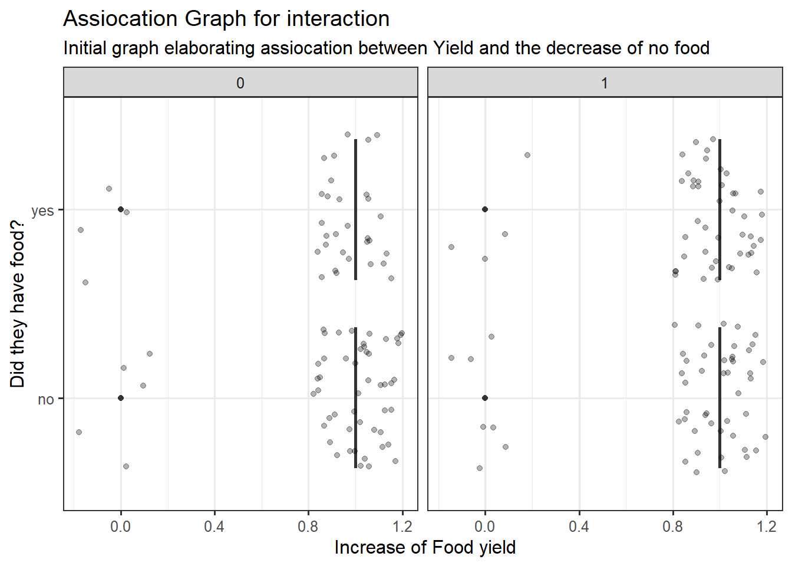

data1 <- read.csv("https://sldr.netlify.app/data/sustainable-livelihoods.csv")|>
drop_na(Increased_Yield) |>
drop_na(Increased_Knowledge)|>
drop_na(Food_Ran_Out)|>
arrange(Partner)Empirical Research
Setting up packages and knitting options
Loading in data from source
- We dropped the NA instances from the main predictors and response variable we would like to use!
Economic question
The economic question was derived out of the description of the data-set I found:
Q. do the programs affect the individual’s intellectuality and yield where it makes sure that there is less food deprivation occurring more often. (is there a association between food_ran_out and increased_knowledge and increased_yield?)
Data Description:
World Renew implemented Sustainable Livelihoods, a five-year project in Bangladesh, Honduras, Mali, Mozambique, and Tanzania to enhance livelihood security for vulnerable households. The Sustainable Livelihoods program worked to build the adaptive capacity of individual households, as well as communities, to manage climate change risks. Poverty in the communities where the program operated is manifested by poor health, low incomes, food insecurity, landlessness, illiteracy and underemployment. Small-scale farmers are challenged by declining soil fertility, lack of secure land tenure, erratic weather and lack of access to credit and inputs. These conditions lead to food shortages and poor nutrition and health. In addition, poor urban households lack skills for employment and financing for small enterprises.
About 80% of the program participants were subsistence farmers who depend on rain-fed agriculture for their livelihoods. The other 20% of program participants belonged to poor households in urban areas, many of them living in slums where living conditions are crowded and unsanitary.
Participants had access to one or more training opportunities designed to promote or improve financial savings, leadership, literacy, and agricultural practices.
World Renew collected data to measure the impact of the Sustainable Livelihoods program including variables:
Participant_ID, unique ID for each participantCountryPartnerorganizationGenderof participantTownwhere the person livesDistrictwhere the person livesAge_Groupof the person completing the surveySavings_Program, whether the person participated in the financial savings programLeadership_Program, whether the person participated in the leadership training programAgriculture_Program, whether the person participated in the sustainable agriculture programLiteracy_Program, whether the person participated in the literacy programn_Programs, number of programs the person participated inFFS, food frequency score (a measure of food security)FDS, food diversity score (a measure of food security and diverse diet)Months_Enough_Food, months (out of the 12 in the past year) where the person had enough foodMonths_Insufficient_Food, months (out of the 12 in the past year) where the person did not have enough foodBusiness_Plan, whether the person had a business planManagement_Confidence, whether the person had confidence in their management skillsSustainable_Ag_Practices, whether the person practiced sustainable agricultureMinimum_Tillage, whether the person used minimum tillage (a sustainable farming practice)Soil_Covered, whether the person kept soil covered (a sustainable farming practice)Crop_Rotation, whether the person rotated crops (a sustainable farming practice)All_Sustainable_Practices, whether the person did all three sustainable farming practices: minimum tillage, soil covered, and crop rotationIncreased_Yield, whether the person had had increased farming yield after program participationDrought_Disease_Resistance, whether the person was growing drought- or disease-resistant seedsSustainable_Useful, whether the person thought sustainable farming practices were usefulLiteracy_Helped, whether the person thought the literacy program helped themIncreased_Knowledge, whether the person said their knowledge had increasedFood_Ran_Out, whether or not the person ran out of food during the study periodVegetables, whether the person, others in the family, or no one ate vegetablesFruits, whether the person, others in the family, or no one ate fruits
Data reference/other conducted studies:
Link to UN Sustainability development and Promoting Development Cooperation here.
link to a statement about the USA contribution to this type of initiative here.
Is Economic question well motivated?
This question has not been proposed yet directly and is worth asking because the initiative will indicate to the provider of this program a factor to see if it is worthwhile.
The links provided above have done studies that are quite different but this question will focus more on the intellectuality increase and if that decreases the amount of food deprivation in these countries.
Whether this question indicates to us true or not it will give us a right step into indicating the more precise question we should be asking.
Predictor choices for model
Increased_KnowledgeandIncreased_Yield- Justification: This i thought would be a great predictor to pair up with increase_yield because they are both binary options which we can study instances where both are either 1 or zeros and see how they influence my response variable.
Age_Group- Justification: this an additional predictor that i thought would influence my response variable because certain ages might be a contributor to the reason why they ran out of food or the reason their knowledge changed differently so I included it.
Gender- Justification: this was a included because I believe cultural aspects and circumstances would alter the rates at which people ran out of food and learned.
(1|Partner)- Justification: the Random effects I based it on The Partner because i believed it would be a bad traditional predictor because all the Organizations included have the same goal so theoretical it should be a bad predictor. It also fits the criteria we said in class that it must be a location, time, or identity which it is. I did not get any convergence problems so that’s a good identification that it is a good RE effect.
All other columns and variables:
- Justification: I wanted to stay within the rule of thumb for this test and make sure that my predictors did not go beyond the threshold. Other predictors would have played into distorting the correlation between my response variable and predictors.
Response variable Justification
the reason I choose
Food_Ran_Outis because I want to do binary evaluation because this variable is either no or yes. I had other options such asMonths_insufficient_Foodbut I thought this response variable would be more suitable because it is whether they completely ran out or not which is more simpler.Operationalization of each of the variables
the degree of measurement for our response variable is whether the people ran out of food more frequently less when we saw an increase in knowledge from these programs.
we will also tie an interaction with
Increased_YieldandIncreased_Knowledgeto see if we can observe a corresponding reaction from both. (indicating if we see an increase in knowledge that in turn, results in a increased crop yield)The quality of this data is derived from a established source so it has trust-able factors which means the extractions from it are tangible.
Motivation to justify Research question
here are examples of researches that did similar studies under different constraints:
The Impact of Livelihood Assets on the Food Security of Farmers in Southern Iran during the COVID-19 Pandemic. The authors review a range of case studies and program evaluations from around the world to assess the impact of sustainable livelihoods programs on key indicators of food security, such as access to food, dietary diversity, and food utilization. Link
Enhancing Agricultural Productivity and Sustainability through Sustainable Livelihoods Programs: Evidence from Ghana. This study by Mensah and colleagues examines the impact of a sustainable livelihoods program on agricultural productivity and sustainability in Ghana. The authors use a randomized controlled trial design to assess the effectiveness of the program in improving farmers’ access to inputs, promoting sustainable farming practices, and increasing yields. Link
An Assessment of Poverty Alleviation Measures and Sustainable Livelihood Capability of Farm Households in Rural China: A Sustainable Livelihood Approach. This study by Kumar and colleagues explores the relationship between sustainable livelihoods programs and knowledge acquisition in rural India. The authors use a mixed-methods approach to assess the impact of the program on farmers’ knowledge of sustainable farming practices and their ability to adapt to climate change risks. Link
Quantitative research
Initial demonstrating graphs
int_graph1 <- gf_boxplot(Food_Ran_Out ~ Increased_Knowledge | Increased_Yield , data = data1) %>%
gf_jitter(alpha = 0.3, width = 0.2) %>%
gf_labs(subtitle = "Initial graph elaborating assiocation between knowledge and the decrease of no food",
title = "Assiocation Graph for interaction",
x = " Increase of Knowledge",
y = "Did they have food?",
)
int_graph1int_graph2 <- gf_boxplot(Food_Ran_Out ~ Increased_Yield | Increased_Knowledge , data = data1) %>%
gf_jitter(alpha = 0.3, width = 0.2) %>%
gf_labs(subtitle = "Initial graph elaborating assiocation between Yield and the decrease of no food",
title = "Assiocation Graph for interaction",
x = " Increase of Food yield",
y = "Did they have food?",
)
int_graph2
Returning to the question we have in mind :
do the programs affect the individual’s intellectuality and yield where it makes sure that there is less food deprivation occurring more often.
ANSWER: Most definitely yes because we can observe an increase or a difference in the amount of people who had food and did/didnt take the program. I believe this makes my research question a topic worth going into and evaluating. We could conclude hesitantly so far that the programs have caused an increase in knowledge and indirectly influence our yield which has caused a effect in the amount of food deprived people.
Our Model
model_fitRan <- glmmTMB(factor(Food_Ran_Out) ~ Increased_Knowledge*Increased_Yield + Age_Group + Gender +
(1|Partner),
data = data1,
family = binomial(link = 'logit'),
na.action = 'na.fail',
REML = FALSE)
msummary(model_fitRan) Family: binomial ( logit )
Formula:
factor(Food_Ran_Out) ~ Increased_Knowledge * Increased_Yield +
Age_Group + Gender + (1 | Partner)
Data: data1
AIC BIC logLik deviance df.resid
256.5 282.4 -120.3 240.5 180
Random effects:
Conditional model:
Groups Name Variance Std.Dev.
Partner (Intercept) 1.669 1.292
Number of obs: 188, groups: Partner, 10
Conditional model:
Estimate Std. Error z value Pr(>|z|)
(Intercept) -1.05722 1.04453 -1.012 0.3115
Increased_Knowledge 0.62317 1.16513 0.535 0.5928
Increased_Yield -0.14140 0.77976 -0.181 0.8561
Age_Group50_plus -0.83572 0.38542 -2.168 0.0301 *
Age_Groupunder_30 -0.73642 0.44092 -1.670 0.0949 .
Gendermale -0.03445 0.33332 -0.103 0.9177
Increased_Knowledge:Increased_Yield -0.25721 1.19300 -0.216 0.8293
---
Signif. codes: 0 '***' 0.001 '**' 0.01 '*' 0.05 '.' 0.1 ' ' 1summary of model:
Model: glmmTMB is form of regression which uses a mixed-effects linear model which is great for binomial regression. It is also used for random effects to which the parameter
Partnerwould be our random effects.Interaction term: we established an interaction predictor between
Increased_Yield*Increased_Knowledgeso that is elaborated in this modelna.action and na.fail: will fail the model if there are any missing data
Reml: is set to
FALSE, which means that the model is fitted using maximum likelihood estimation, rather than restricted maximum likelihood estimation.Results of model:
Rationale = The logic for the predictors still remains the same. However, the Random effects I based it on The Partner because i believed it would be a bad traditional predictor because all the Organizations included have the same goal so theoretical it should be a bad predictor. It also fits the criteria we said in class that it must be a location, time, or identity which it is. I did not get any convergence problems so that’s a good identification that it is a good RE effect. However, we have a high AIC and BIC relative to our observation so we should continue testing our model to see if there is correlation.
SUMMARY EXPLANATION
Random effect variance estimate was overall good showing that the inclusion of partner is correct based on the STd. dev.
Partner (intercept) 1.669 Variance 1.292 std. Devnumber of obs: 188, groups: Partner, 10Assessments
Dredge
dredged <- dredge(model_fitRan, rank = 'BIC') head(dredged)Global model call: glmmTMB(formula = factor(Food_Ran_Out) ~ Increased_Knowledge * Increased_Yield + Age_Group + Gender + (1 | Partner), data = data1, family = binomial(link = "logit"), na.action = "na.fail", REML = FALSE, ziformula = ~0, dispformula = ~1) --- Model selection table cnd((Int)) dsp((Int)) cnd(Age_Grp) cnd(Gnd) cnd(Inc_Knw) cnd(Inc_Yld) df 1 -1.0270 + 2 5 -1.3970 + 0.4583 3 2 -0.7804 + + 4 9 -0.8897 + -0.1961 3 3 -1.0170 + + 3 6 -1.0960 + + 0.3799 5 logLik BIC delta weight 1 -124.076 258.6 0.00 0.690 5 -123.375 262.5 3.83 0.101 2 -120.838 262.6 4.00 0.094 9 -124.015 263.7 5.11 0.054 3 -124.071 263.9 5.23 0.051 6 -120.379 266.9 8.32 0.011 Models ranked by BIC(x) Random terms (all models): cond(1 | Partner)Explanation:
This indicates to us the inclusion of
(1|Partner)was a smart decision and we should proceed with our assessment!Normality of Residuals
gf_histogram(~resid(model_fitRan), data = data1, bins = 6)|> gf_labs(title = "Histogram: Normality of residuals", x = "residuals", y = "count")Explanation:
Normality of residuals refers to the assumption that the residuals of a statistical model are normally distributed. Residuals are the differences between the observed values and the predicted values from the model. If the residuals are normally distributed, it means that the model is capturing the underlying pattern in the data and that the model is a good fit for the data.
A good indication of normality of residuals is when the histogram of residuals is approximately bell-shaped and symmetric. = FAILED
With random effects ACF TEST
s245::gf_acf(~resid(model_fitRan))|> gf_lims(y=c(-1,1))|> gf_labs(subtitle = "Assement1", title = "Independence Of Residuals", )
Explanation:
The
gf_acffunction takes a time series object as input and creates a plot of the autocorrelation function (ACF) for the series. The ACF plot shows the correlation of a time series with its own lagged values. In other words, it shows how correlated a time series is with its own past values at different lags.The plot typically has the lag on the x-axis and the correlation coefficient on the y-axis. The plot also includes confidence bands to help identify statistically significant correlations.
Besides initial lag exceeding dashed areas, this assessment passes with good conditions
Scaled Residuals
food_sim <- simulateResiduals(model_fitRan) gf_point(food_sim$scaledResiduals ~ fitted(model_fitRan), alpha = 0.2) %>% gf_labs( y = 'Scaled Residuals')
Results: Mean variance relationship looks great because we see a vertical relationship with minimal clustering in it.
Prediction Plot
ggpredict(model_fitRan, c("Increased_Knowledge", "Increased_Yield"), type = 're') |> plot()Results: I feel that this prediction plot demonstrates a better interaction than what we had in the previous test because it is showing us what we want to see in a interaction predictors. This is also a individual Average rather than population due to the dredge suggesting that a individual average is better.
Conclusion
restated question: do the programs affect the individual’s intellectuality and yield where it makes sure that there is less food deprivation occurring more often. (is there a association between food_ran_out and increased_knowledge/increased_yield?)
Answered based on previous test: without random effects: can not be concluded from the results of the previous test to say that increased knowledge and increased yield resulted in less food deprivation if anything it could not be trusted for anything.
Answered based on this test: I can say more confidently that i can see that the interaction is giving us some insight that they might lead us to think that food deprivation occurs less. I would stick to these results because it gives a more affirmative result with appropriate measures followed. The prediction plot is completely different and is showing a interaction.
Limitations of study
Time: Being a junior with a double major, it was difficult to devote more time into this study because of other commitments.
Knowledge: I wish i knew more technical knowledge to do more assessments and an evaluations of the model I had!
Implications of the study
The extractions that we can make from this study are detrimental because it gives us justification to further expand our programs for food security. It is also necessary to establish initial steps to say that we can further expand or maintain these programs in the country because they are beneficial.
Next step?
deduce which variables are causing most influence on my response variable and make a concrete study on that independently.